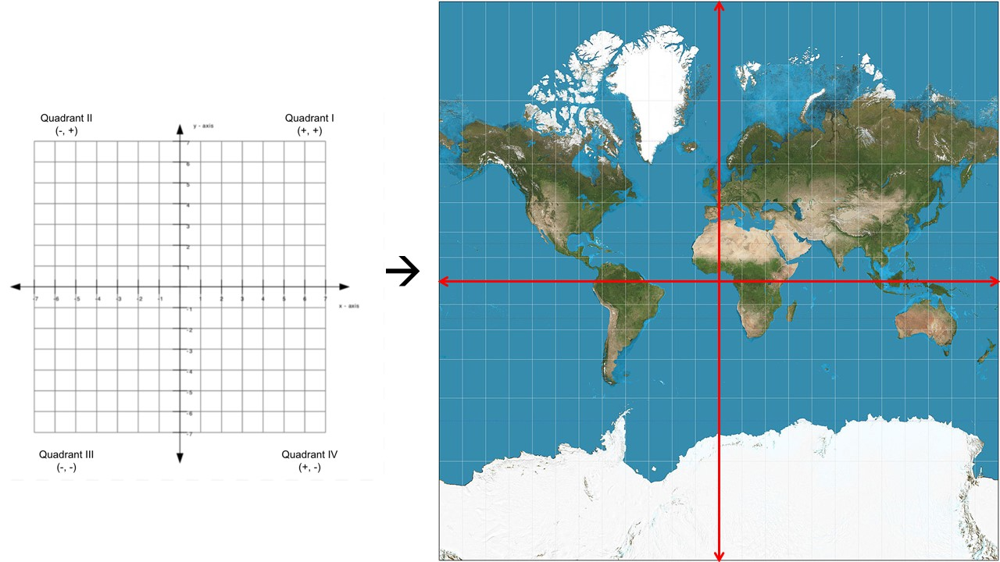
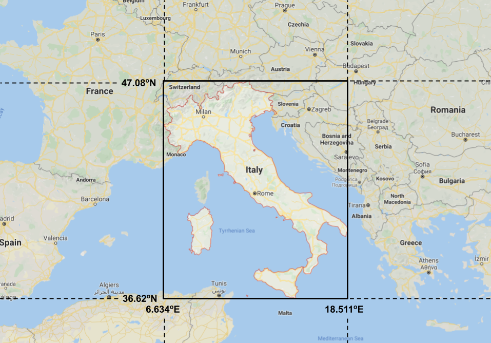

Spatial Data
Contents
Spatial Data¶
Lesson Content
raster vs. vector data
The earth as a coordinate system; bounding boxes
geodesy and UTM grids
shapelyvector object library
Context¶
Spatial data, as defined by software firm Safe is:
a term used to describe any data related to or containing information about a specific location on the Earth’s surface
As earth scientists we are all about the earth’s surface! Our data is inherently spatial. Very little (or nothing) that we do is disconnected from location. Learning how to deal with location, then, is a key part of learning to code for earth science research.
Vector data vs. Raster data¶
Spatial data is most often divided between two types:
raster data - made up of a continuous matrix of cells that each hold specific values
vector data - data storing discrete boundaries with attached attributes

Lidar has become increasingly prevelent, and though it is often represented in raster file formats has also been called “the third branch of geospatial data”.
📝 Check your understanding
What is the best type of data structure for each dataset?
temperature output from a weather model of spatitially continuous temperature predicitions
temperature taken from individual ground stations
rock types from several park locations
whole air samples taken on an airplane flight
elevations across a state
All the world’s a coordinate system¶
A map of the world:

We are familiar with a map like this. Latitudes run horizontally east/west and longitudes run vertically north and south.
There are several ways to represent coordinates, but when we are representing coordinate locations on a computer we typically use decimal degrees:
35 degrees 30 mintes = 35.5 degrees
We also use a negative sign to denote the southern and western hemisphere:
112 W, 15 S = -112, -15
While this all is generally approachable it can get easy to get turned around when you’re in the nitty gritty of coordinates with your data. One visual I like to keep myself on track is that the coordinate system on our map is just that, a coordinate system just like they x and y planes in math class.

Bounding Boxes¶
Bounding boxes represent the minimum and maxiumum coordinates of the dataset. These are often latitude and longitude lines, but the bounding box is given the units of whatever dataset the raster is using. AVIRIS, for example, uses a UTM grid (more detail later) so the units of the bounding box are meters.

In this example the outline of Italy is shown in red and the bounding box for Italy, which follows the minimum and maximum latitude and longitude lines, is shown in black.
Bounding boxes are often written as a list of coordinates in the format [minimum_x minimum_y maximum_x maximum_y]. So for our Italy example the bounding box would be [6.634, 36.62, 18.511, 47.08].
When translating between north/south/east/west and x/y coordinates:
minimum_x-> most westernminimum_y-> most southernmaximum_x-> most easternmaximum_y-> most northern
📝 Check your understanding
Pull up Google maps or your favorite mapping appliation and zoom into the state of Wyoming. Click the map to view latitude and longitude locations for the edges. Write down an approximate bounding box (to ~the nearest half of a degree) for the state in the form [minimum_x minimum_y maximum_x maximum_y]
Geodesy (copied to additional lecture – shorten)¶
geodesy is the science of understanding and measureing the earth’s shape. There are people who spend their whole careers as geodesists. Geodesy and mapping is an integral part of georeferencing your data - or placing your data in space. Without georeferencing raster datasets are just pretty images that could have been taken anywhere in the world, or not on this world at all.
The three major concept we will be distinguishing between today are:
datums
map projections
coordinate reference systems
Ellipsoids and Datums¶
Geodesists have defined the shape of an ellipsoid which is believed to best align with the shape of the earth. The mostly commonly used ellisoid is the WGS 84 ellipsoid which was defined in 1984. In addition to defining the size of the ellipsoid we also need to define where the center of the ellipsoid should sit so that it is acurrate for as many places on earth at once. Defining where to put the ellipsoid is called the datum.

Together the ellipsoid and the datum become the mathematical definition of the earth’s surface.
Map Projections¶
The ellipsoid is a 3D shape. Map projections are the result of taking a 3D shape and turning it into being 2D.

There are an insane number of ways to do this and they are grouped into different families. The most important takeaway is just to know that when you convert a 3D object into a 2D you aren’t going to be able to be accurate in every aspect. Something has to sacrifice. It might be relative size or it might be straight lines but everything can’t be perfect on a given map projection.

Coordinate Reference Systems (CRS)¶
Once you lay out your 2d surface representing the earth you next need to label the map so you can refer to points on that surface. The system you uses for labelling points on the map is a coordinate reference system (crs).
CRS fit into two main categories:
units of degrees (ex. latitude and longitude) - geographic CRS
units of distance (ex. meters, kilometers, miles, …) - projected CRS
The units of a CRS will be a piece of information that you use frequently when working with spatial data.
📝 Check your understanding
What purpose does each of the three elements of geodesy serve?
Ellipsoid + Datum
Map projection
Coordinate Reference System
Geodesy in Code: EPSG¶
One common way to notate coordinate reference systems and map projections is with EPSG codes. These codes assign an integer number to many of the common map projection/crs combinations.
Really common projections include:
EPSG:4326 - what most people think of as “regular” lat/lon coordinates EPSG:3857 - Web mercator, the projection used by Google maps and most web maps. The de facto standard of web mapping.
UTM Grids¶
The Universal Transverse Mercator (UTM) projected coordinate system that covers the entire earth. The system is broken up into 60 zones, each 6 degrees longitude wide, that span from the south to the north pole.
from IPython.display import Image
from IPython.core.display import HTML
# UTM grid zones
Image(url= "https://gisgeography.com/wp-content/uploads/2016/05/UTM-Zones-Globe-2.png", width=330)

Notice in the image how the area covered by each zone is widest at the equator and gets skinnier towards the poles.
Easting and Northing¶
Instead of latitude and longitude the UTM grid system uses a northing and an easting, respectively.
Longtude -> Eastings. Eastings are measured from the central meridian, which has a value of 500,000m.
Latitude -> Northings. Northings are measured from the from the equator, which has a value of 0 for the northern hemisphere and 10,000,000m for the southern hemisphere.
Some benefits of UTM:
All values of eastings/northings are positive, so there are no negative numbers nor is there an East-West designation
constant distance relationship anywhere on the map
Image(url= "https://www.maptools.com/images/28ad74e.png", width=360)

The x direction should only range from about 0 to 1,000,000 where as the y direction could range from 0 to about 10,000,000.
📝 Check your understanding
What is the set of coordinates corresponding to the exact center of a UTM grid?
EPSG codes for UTM grids¶
Each grid has its own EPSG code, meaning there are 120 total EPSG codes total for UTM grids. Luckily there is an order to how these codes are assigned.
northern hemisphere - 326{zone number}
southern hemisphere - 327(zone number}
To visually reference UTM grid zone numbers I use the image from this website as a reference:
# UTM grid zones
Image(url= "http://www.dmap.co.uk/utmworld.gif")

Another source to referenece is epsg.io. Type the name of the reference system you are interested in to find information or view it on a map. Ex. https://epsg.io/32630 or https://epsg.io/4326
📝 Check your understanding
What is the EPSG code for the UTM zone covering most of Ireland?
Back to Coding¶
shapely objects¶
shapely is a library for handling vector data. It has objects for Points, LineStrings, LineRings,and Polygons. Points and Polygons are what we will primarily use.
See also:
Creating a Point()¶
You create a shapely object by giving it a set of coordinates, in the format (x, y).
Notice! x, y for degree coordinates is longitude, latitude
from shapely.geometry import Point
point = Point(0.0, 0.0)
print(point)
POINT (0 0)
Point(0,0).distance(Point(3,4))
5.0
list(Point(4,3).coords)
[(4.0, 3.0)]
Creating a Polygon()¶
from shapely.geometry import Polygon
polygon = Polygon([(0, 0), (1, 1), (1, 0)])
When you create a Polygon object you get extra properties that tell you something about your object
print(polygon.area)
print(polygon.length)
print(polygon.bounds)
0.5
3.414213562373095
(0.0, 0.0, 1.0, 1.0)
Creating a Bounding Box¶
When we create a bounding box in code the order of inputs is:
minx, miny, maxx, maxy
from shapely.geometry import box
box(10, -15, 20, -5)
Example¶
Creating a bounding box Python object for the bounding box of Italy in the image above
bbox_italy = box(6.634, 36.62, 18.51, 47.08)
bbox_italy.area
124.22296000000003
Operations with spatial objects¶
Just like addition or multiplication are operations for numbers, we also have operations we can run on spatial data which are unique. Here are a few common ones:

Another common one is a buffer:

bbox_italy = box(6.634, 36.62, 18.51, 47.08)
bbox_example = box(12.5, 36, 22.7, 49.3)
bbox_example - bbox_italy

bbox_example.intersection(bbox_italy)

An example of buffer using the shape of California¶
import json
from shapely.geometry import shape
# Opening a geojson and convering to a shapely object. We'll talk about this again below
with open('./data/california.geojson') as f:
ca_geom_json = json.load(f)
ca_geom = shape(ca_geom_json['geometry'])
ca_geom

ca_geom.buffer(0.8)

📝 Check your understanding
In the image below we have a shape purple, tan and green. What is the operation that was used on purple and tan to get green shape?

Different Ways to Represent Spatial Objects¶
While Python objects are nice, they aren’t great if you are trying to take your objects out of Python. For example, maybe you drew out a custom shape in QGIS that you want to use or you defined an ROI in ENVI and you want to import those into your Python code.
Shapefiles are a really common way to move shapes around. Opening those is a little more involved so we won’t look at those right now, but I will briefly mention two other common representations that are text-based: GeoJSON and WKT.
geojson¶
Geojson is a specific flavor of the very common JSON format. JSON format is a way of sending data that looks just like a Python dictionary but it is used much more broadly than just Python.
Links:
geojson.org - the full specification
geojson.tools - for quick visualization of geojson objects
armstrong_geojson = {
"type": "Feature",
"geometry": {
"type": "Point",
"coordinates": [-117.89, 34.94]
},
"properties": {
"name": "Armstrong Flight Research Center"
}
}
The geojson acts just like a Python dictionary.
armstrong_geojson['geometry']
{'type': 'Point', 'coordinates': [-117.89, 34.94]}
from shapely.geometry import shape
armstrong_geometry = shape(armstrong_geojson['geometry'])
list(armstrong_geometry.coords)
[(-117.89, 34.94)]
Loading a geojson from a file¶
import json
with open('./data/california.geojson') as f:
out = json.load(f)
ca_geom = shape(out['geometry'])
WKT¶
WKT stands for “Well Known Text”. It is another way of saving vector geometries.
armstrong_geometry.wkt
'POINT (-117.89 34.94)'